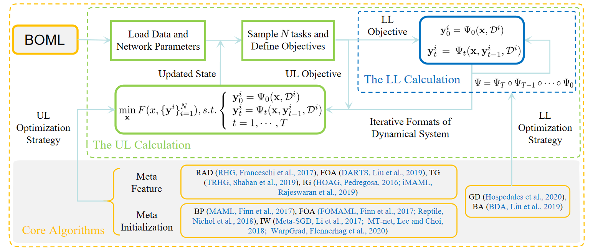

Welcome to BOML's documentation!¶
Configuration & Status


BOML is a modularized optimization library that unifies several ML algorithms into a common bilevel optimization framework. It provides interfaces to implement popular bilevel optimization algorithms, so that you could quickly build your own meta learning neural network and test its performance.
Key features of BOML
- Unified bilevel optimization framework to address different categories of existing meta-learning paradigms.
- Modularized algorithmic structure to integrate a variety of optimization techniques and popular methods.
- Unit tests with Travis CI and Codecov to reach 99% coverage, and following PEP8 naming convention to guarantee the code quality.
- Comprehensive documentations using sphinx and flexible functional interfaces similar to conventional optimizers to help researchers quickly get familiar with the procedures.
Optimization Routine
The figure below illustrates the general optimization routine by organized modules in BOML.
Documentation
Getting Started
Core Modules of BOML
Additional Information
Related Links